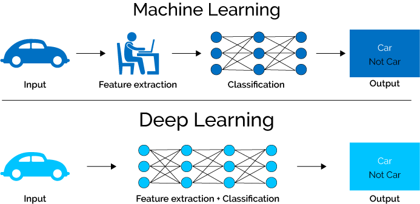
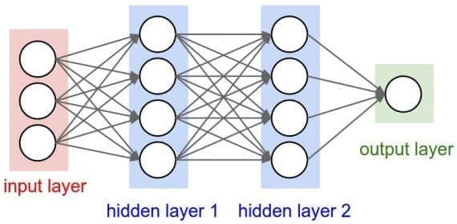
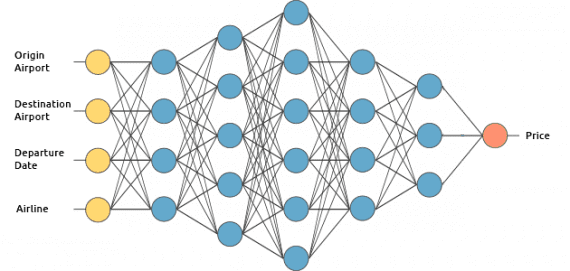
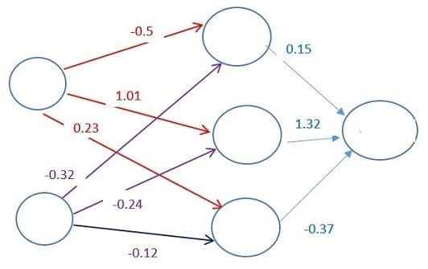
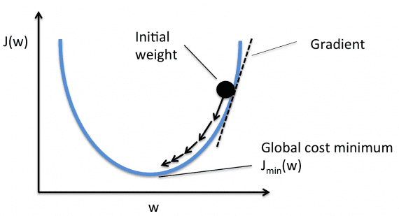

Глубокое обучение – мощный набор техник обучения нейросетей. это новая стадия развития науки о нейросетях. В ней сети включают множество составных элементов, которые взаимодействуют в рамках более чем одного слоя. Такие системы способны решать очень сложные задачи. Успехи машин в разных играх стали возможны именно благодаря глубокому обучению. Как оно работает, и в чем отличие глубокого обучения от машинного - вы узнаете в этой статье.
Что такое глубокое обучение нейросетей (Deep learning)
Глубокое обучение — это метод машинного обучения. Глубокое обучение позволяет обучать модель предсказывать результат по набору входных данных. Для обучения сети можно использовать как контролируемое, так и неконтролируемое обучение.
deep learning и машинное обучение различие.
Как Работает Глубокое Обучение?

Разница между машинным и глубоким обучением
Рассмотрим, как работает глубокое обучение, на примере сервиса по оценке стоимости авиабилета. Мы будем обучать его контролируемым образом.
Мы хотим, чтобы наш сервис предсказывал цену на авиабилет по следующим входным данным:
аэропорт вылета;
аэропорт назначения;
дата отбытия;
авиакомпания.
Нейронные сети глубокого обучения
Давайте заглянем внутрь нашей модели. Как и у животных, искусственная нейронная сеть содержит взаимосвязанные нейроны. На диаграмме они представлены кругами:

Глубокая нейронная сеть (с двумя скрытыми слоями)
Нейроны сгруппированы в три различных типа слоев:
входной слой;
скрытый слой (слои);
выходной слой.
Входной слой принимает входные данные. В нашем случае имеется четыре нейрона на входном слое: аэропорт вылета, аэропорт назначения, дата вылета и авиакомпания. Входной уровень передает эти данные в первый скрытый слой.
Скрытые слои выполняют математические вычисления со входными данными. Одна из задач при создании нейронных сетей — определение количества скрытых слоев и нейронов на каждом слое.
Слово «глубина» в термине «глубокое обучение» означает наличие более чем одного скрытого слоя.
Выходной слой выдает результат. В нашем случае это прогноз цены на билет.

Итак, как же вычисляется цена? Здесь вступает в силу магия глубокого обучения. Нейроны связаны между собой с определенным весом. Вес определяет важность элемента входных данных. Исходные веса задаются случайным образом.
При прогнозировании цены на билет дата вылета является одним из наиболее важных факторов. Следовательно, связи нейрона времени вылета будут иметь большой вес.

Каждый нейрон имеет функцию активации. Ее смысл трудно понять без привлечения математических рассуждений. Одной из ее целей является «стандартизация» данных на выходе из нейрона.
После того, как набор входных данных прошел через все слои нейронной сети, функция активации возвращает выходные результаты через выходной уровень.
Обучение глубокой сети
Обучение нейросети — самая сложная часть глубокого обучения. Почему?
Вам нужен большой набор данных.
Вам нужно большое количество вычислительной мощности.
Для оценки стоимости билета нужно найти исторические данные о ценах на билеты. Из-за большого количества возможных комбинаций аэропортов и дат вылета нам нужен очень большой список цен на билеты.
Для обучения сети нужно подать в нее подготовленные данные и сравнить сгенерированные ей выходные результаты с результатами из нашего тестового набора данных. Поскольку сеть еще не обучена, результаты будут неверными.
После пропуска всех данных можно определить функцию, которая будет показывать нам, насколько результаты работы алгоритма отличаются от реальных данных. Эта функция называется функцией потерь.
В идеале мы хотим, чтобы функция потерь была равна нулю. В этом случае выходные результаты работы сети полностью совпадают с результатами тестового набора данных.
Как уменьшить значение функции потерь?
Нужно менять веса между нейронами. Можно делать это случайным образом до тех пор, пока функция потерь не станет равной нулю, но это не очень эффективно.
Вместо этого мы будем использовать метод градиентного спуска. Градиентный спуск — это метод, который позволяет найти минимум функции. В нашем случае мы ищем минимум функции потерь.
Суть метода состоит в небольшом изменении весов после каждой итерации. Вычисляя производную (или градиент) функции потерь при определенном наборе весов, можно определить, в каком направлении находится минимум.

Для минимизации функции потерь нужно многократно перебирать данные. Именно поэтому нам требуется большая вычислительная мощность. Уточнение весов с помощью градиентного спуска выполняется автоматически. В этом и состоит магия глубокого обучения!
После обучения можно использовать разработанный нами сервис для прогнозирования цен на авиабилеты.
В сухом остатке:
Глубокое обучение использует нейронную сеть для воспроизведения интеллекта животных.
Существует три типа слоев нейронов в нейронной сети: входной слой, скрытый слой (слои) и выходной слой.
Связи между нейронами имеют вес, определяемый важностью элемента входных данных.
Для обучения глубокой нейронной сети необходим реально большой набор данных.
Итерационно сравнивая выходные результаты со включенными в набор данными, можно вычислить функцию потерь, указывающую, насколько сильно ошибается алгоритм.
После каждой итерации (epoch) веса между нейронами перераспределяются с помощью метода градиентного спуска для минимизации функции потерь.